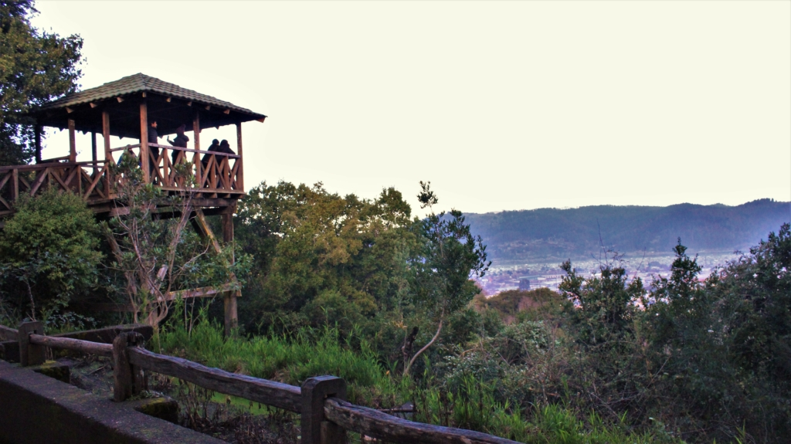
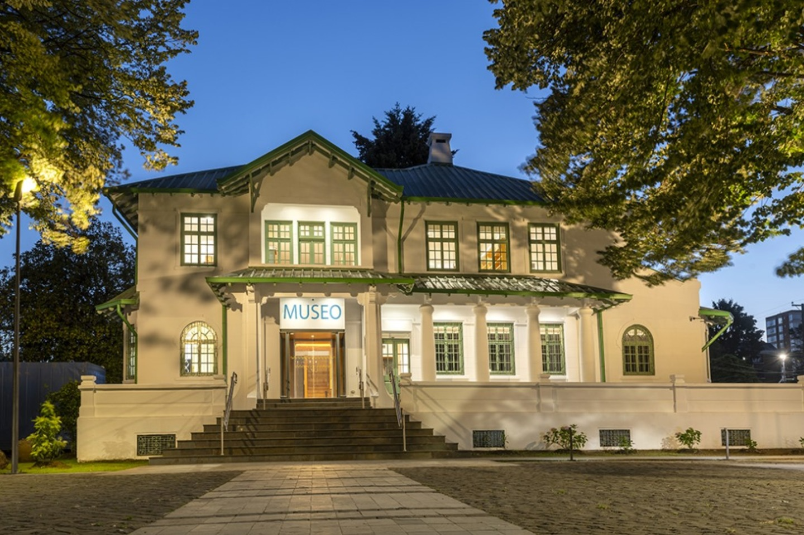
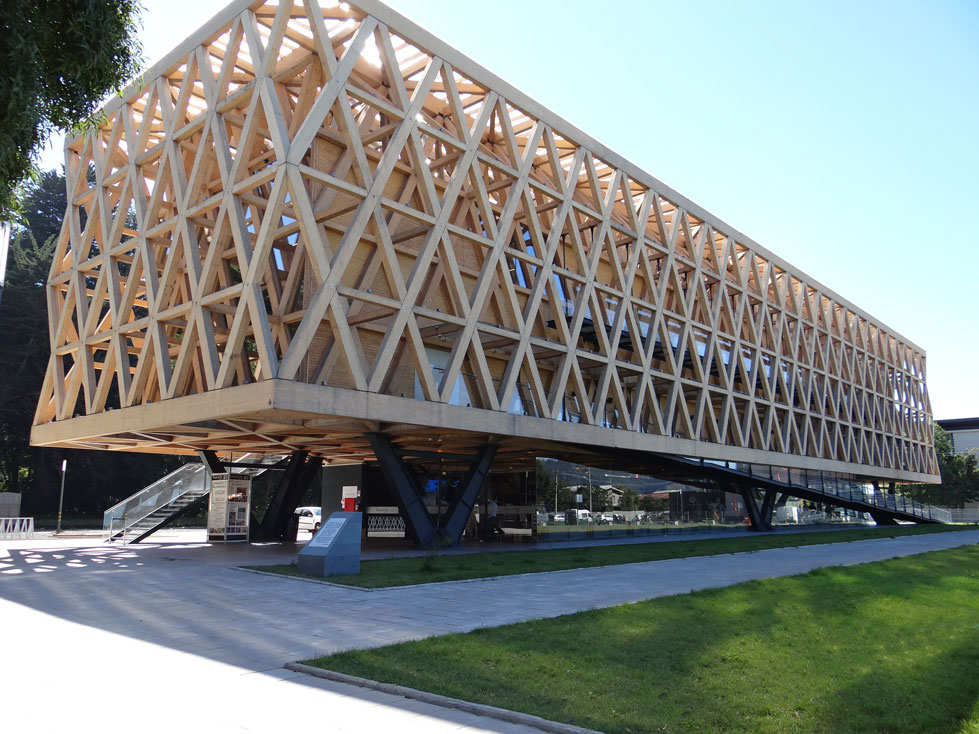
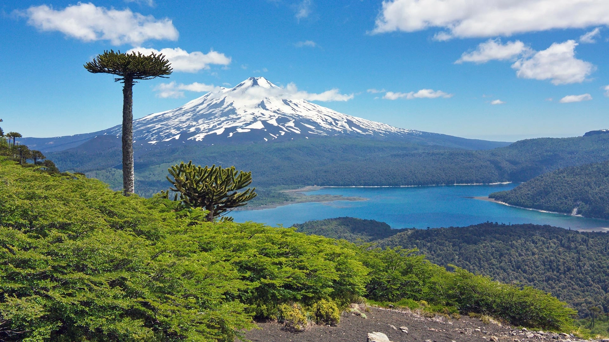

Lugares de interés en Temuco
Presiona el botón para conocer la distancia desde tu ubicación a estos lugares.
-

PaisajeCerro Ñielol
Distancia por calcular
Monumento natural ubicado en la zona urbana, ideal para senderismo y vista panorámica.
-

Punto de interésMuseo Regional de la Araucanía
Distancia por calcular
Exhibe el patrimonio cultural y la historia mapuche de la región.
-

Punto de interésPabellón Araucanía
Distancia por calcular
Centro cultural y arquitectónico imperdible a los pies del Cerro Ñielol.
-

PaisajeParque Nacional (por definir)
Ubicación pendiente de definir
Área protegida con biodiversidad única y paisajes impresionantes.